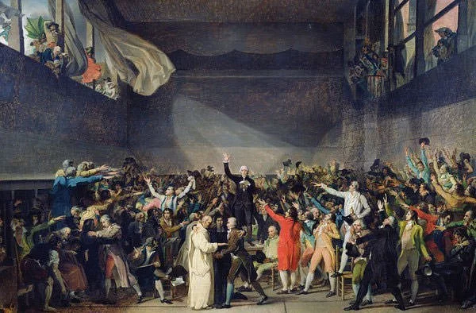

Important Notes

The Estates General was the general assembly of France. It was
divided into three estates: the clergy (First Estate), the
nobility (Second Estate) and the rest of the population (Third
Estate). The Estates General had last met in 1614 but it was
summoned by King Louis XVI in May 1789 as the nation was facing
a severe financial crisis. Each estate had only one vote. Thus,
though the Third Estate comprised of more than 98% of the French
population, it was usually overruled by the nobility and the
clergy. In the lead up to the meeting of the Estates General on
May 5, the Third Estate gathered support for equal
representation but the negotiation with the other two estates
failed. In response, the Third Estate decided to form their own
National Assembly. On June 20, 1789, Louis XVI ordered the
closure of the Salle des États where the Assembly met. The Third
Estate moved to an indoor tennis court where they pledged not to
separate until they had given France a constitution. This became
known as the Tennis Court Oath.
As the National Constituent Assembly continued to meet at
Versailles, soldiers, mostly foreign mercenaries, began to
arrive in Paris. Also, Jacques Necker, director-general of the
finances who was considered sympathetic to the common people,
was dismissed by King Louis XVI. The Parisians interpreted these
actions as an attempt toward shutting down the National
Constituent Assembly. They responded by storming toward the
Bastille fortress on July 14, 1789, to secure gunpowder and
weapons. The troops at Bastille resisted for a few hours before
they surrendered to the mob. The fall of the Bastille, a symbol
of power and the monarchy’s dictatorial rule, is considered by
some as the start of the French Revolution. It resulted in King
Louis XVI withdrawing the royal troops from the French capital
and recalling finance minister Jacques Necker. Due to the
significance of the Storming of the Bastille, July 14 is
celebrated as the national day of France. It is known as
Bastille Day in English.


On 4 and 11 August, 1789, the Constituent Assembly abolished the
entire feudal system. It abolished both Manorialism of the
Second Estate and the tithes gathered by the First Estate.
Manorialism was an integral part of feudalism by which peasants
were rendered dependent on their land and on their lord. Tithes
was one tenth of annual produce or earnings taken as a tax for
the support of the church. Thus the peasants got their land free
and also no longer paid the tithe to the church. Other proposals
followed with the same success: the equality of legal
punishment, admission of all to public office, abolition of
venality in office and freedom of worship. Thus during the
course of a few hours, nobles, clergy, towns, provinces,
companies and cities lost their special privileges.
Bad harvests in France had caused the price of flour to increase
dramatically, which in turn raised the price of bread, the
staple food of most French citizens. Many people in Paris were
thus hungry and restless. On 5th October 1789, a large crowd of
protesters, mostly women, began to assemble at Parisian markets.
After getting unsatisfactory responses from city officials, the
women marched from Paris to the Palace of Versailles. They were
convinced that the royal family lived in luxury oblivious to the
problems of the common people. They stormed the palace, killing
several guards and demanded the king to “live among the people”.
Louis XVI ultimately conceded to their demands and agreed to go
to Paris with the mob. The royal family in Paris was placed
under the “protection” of the National Guards, thus legitimizing
the National Assembly.


On 26th August 1789, the Assembly published the Declaration of
the Rights of Man and of the Citizen, a charter of human
liberties, containing the principles that inspired the French
Revolution. The basic principle of the Declaration was that all
“men are born and remain free and equal in rights”. Its 17
articles served as the preamble to the Constitution. The long
awaited constitution finally came into effect on September 30,
1791. France was proclaimed a constitutional monarchy, while the
National Assembly was dissolved and replaced by a new political
body named the Legislative Assembly. King Louis XVI became a
little more than a figurehead. He was forced to swear an oath to
the constitution and a decree that declared that retracting the
oath, heading an army for the purpose of making war upon the
nation or permitting anyone to do so in his name would amount to
abdication.